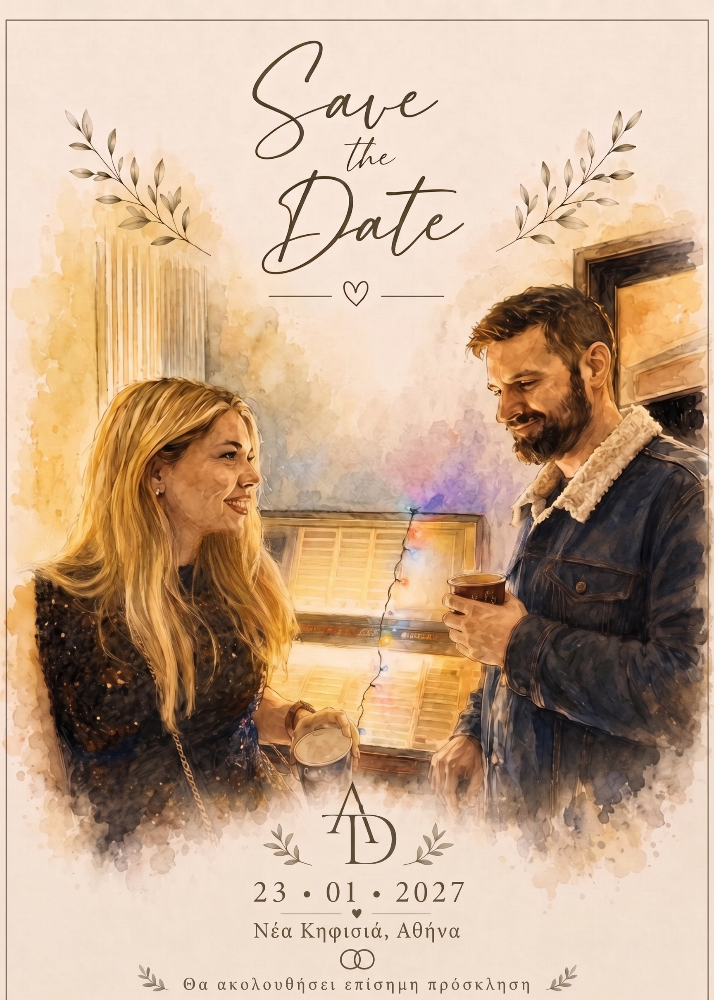

Save the Date

A
·
D
Ανοίξτε τον φάκελό μας
Δείτε τις λεπτομέρειες
–
Μέρες
:
–
Ώρες
:
–
Λεπτά
:
–
Δευτ.
Προσθήκη στο ημερολόγιο
Google Calendar
Apple · Outlook · άλλο
(.ics)
Δείτε ξανά τον φάκελο
Η απάντησή σας
Θα είστε μαζί μας;
Άφησέ το κενό
Ονοματεπώνυμο
Θα παρευρεθείτε;
Με χαρά, θα είμαι εκεί
Δυστυχώς, δεν θα μπορέσω
Συνολικός αριθμός ατόμων, μαζί με εσάς
(υποχρεωτικό)
Ονόματα συνοδών
(προαιρετικό)
Επιβεβαίωση απάντησης
✓
Ευχαριστούμε.